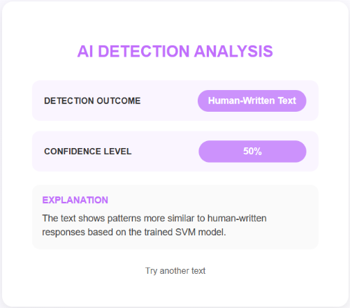
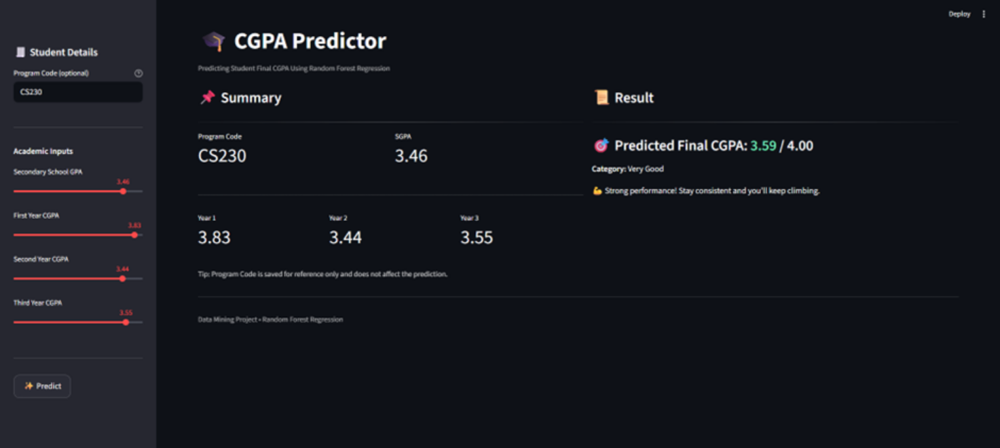
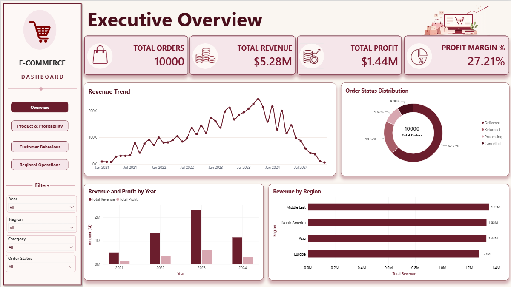

Software Development
Creating user-focused applications and practical solutions to everyday challenges.
Aspiring Software Developer · Data Analyst · AI/ML Enthusiast
A Computer Science student who enjoys building practical applications, exploring machine learning and turning data into meaningful insights.
Hi! I'm Nor Afiqah binti Cik Azaharuddin, a Computer Science student at Universiti Teknologi MARA (UiTM), Terengganu. I enjoy transforming everyday challenges into practical systems and clearer information.
My academic projects cover machine learning, predictive analytics, data visualization, and Java application development. I enjoy combining logical problem-solving with intuitive interfaces.
Let's connect ↗Bachelor of Computer Science (Hons.) (CS230) · Data Science specialization
CGPA 3.84 · Dean’s List every semester · Kuala Terengganu, Malaysia
Creating user-focused applications and practical solutions to everyday challenges.
Exploring trends, building dashboards and communicating insights through data.
Applying classification, predictive modelling and intelligent techniques to academic problems.
Technologies used across my academic projects.
Seven academic projects across AI, data analytics, and software development.

01 / MACHINE LEARNINGDeveloping an SVM-based model to detect AI-generated responses in online assessments.

02 / PREDICTIVE ANALYTICSA predictive analytics application using Random Forest and Streamlit.
A classification model developed using WEKA and the J48 algorithm.
An image recognition model built using MATLAB and convolutional neural networks.

05 / BUSINESS INTELLIGENCEAn interactive Power BI dashboard analyzing sales performance, customer behavior, and product profitability.
A hostel management system developed with Java NetBeans featuring QR-based check-in and check-out.
A Java NetBeans application for organizing and managing book records.
Real screenshots are available for three projects. Additional academic project screenshots will be added when available.
Selected academic achievements, learning milestones and involvement.
PRIDE Showcase, 12th Edition · Universiti Teknologi MARA
Bachelor of Computer Science (Hons.) · Current CGPA: 3.84
IBM SkillsBuild
Open to conversations about software development, data analytics, AI and opportunities to learn and collaborate.